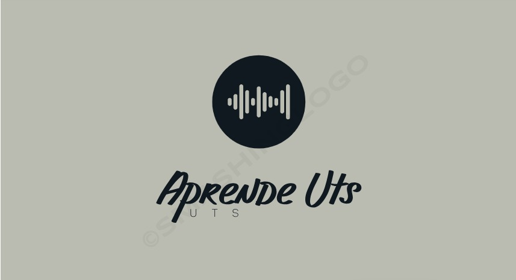

UTS, sujeta a vigilancia del Ministerio de Educación Nacional Correo físico: Calle de los Estudiantes #9-82 Ciudadela Real de Minas-Bucaramanga-Santander Email: peticiones@correo.uts.edu.co | Línea de Atención a la Ciudadanía PBX 57+60+7+6917700 Línea anticorrupción:57+60+7+6917700 ext 1000 :::: Regionales :::: Formulario PQRSD Política de privacidad y condiciones de uso
William Fabian Vega Leoan 
Luis Ricardo Lizarazo Gonzalez
Atención y orientación: Edificio B-Piso 1- Oficina de Atención al Ciudadano. Horario de Atención: Lun-Vie: de 7:30 am a 12:00 m y 2:00 pm a 6:00 pm Notificaciones judiciales: notificacionesjudiciales@correo.uts.edu.co sitio web diseñado por: Programa de Ingeniería de Sistemas UTS Última actualización: 2023-01-19